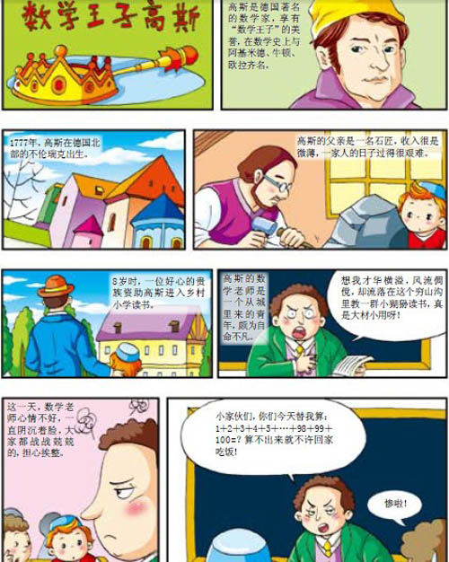
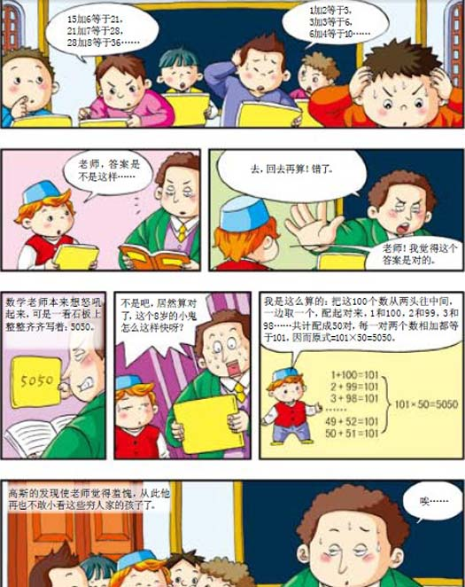

在数学的领域中、提出问题的艺术节比解答问题的艺术节更为重要。
——德国数学家康尔
据说张飞成名前曾以贩猪为生，是个粗中有细的人。一日，他挑着两筐猪来到集市上。刚放下担子，就有一个红脸大汉子走来说：“我要买两筐小猪的一半零半只。”话音刚落，又过来一个黑脸大汉说：“你若卖给他，我就买剩下的一半零半只。”没等张飞答话，又挤过来一个白面书生说：“你若卖给他俩，我就买他俩剩下的一半零半只。”张飞一听，不由黑须倒竖，怒上心头。心想：小猪哪有卖半只的，这不是存心欺负俺老张吗？正待动武，但又仔细一想，忽然答应了。结果张飞照他们三个人的说法卖，小猪正好卖完。聪明的读者，你知道张飞一共卖了多少头小猪吗？他们三人各买了多少头？
一篇印度神话这样记载：有一束莲花，把这束莲花的三分之一、五分之一、六分之一分别献给三位女神，还有四分之一奉献给另一位女神，剩下的六枝献给声望最高的人。这束莲花共有多少枝？
某慈善家洋洋得意地说：“在上个星期，我把五十枚银元施舍给十个可怜的人。我不是平分给他们的，而是根据他们困难的程度进行施舍。因此，他们每个人得到银元的枚数都不相同。”一个聪明的青年听了很生气，说：“你是一个伪慈善家，你说的全是谎话！”这个青年为什么这样说？理由何在？
有一种东西，吃两个要一元，吃四个要两元，吃九个要三元，你能猜出这是什么东西吗？
有一个牧区，当地政府规定，牧民每赶一群羊经过一个关口，要没收一半的羊，再退还一只。有一个牧民，在经过十个关口之后，只剩下两只羊了，你知道这个牧民最初有几只羊吗？
我国古代数学名著《孙子算经》中有这样一道题：
今有三女，长女五日一归，中女四日一归，小女三日一归。问：三女何日相会？
意思是：一家有三个女儿都已出嫁。大女儿五天回一次娘家，二女儿四天回一次娘家，小女儿三天回一次娘家。三个女儿从娘家同一天走后，至少再隔多少天三人再次相会？
如何解答这道题呢？
兄妹两人在小河上划船。一阵风把草帽吹到河里去了，可是他们两人谁也没有发觉。当他们逆流划船到离草帽3公里的时候，才发现草帽不见了。这时是下午一点半钟。于是他俩掉过船头顺流而下追帽子。假设船速为每小时6公里，水流速度为每小时2公里，当他们追回草帽的时候已经是几点钟啦？
有一座三层的楼房着火了，一个消防员搭了梯子爬到三层楼上去抢救东西。当他爬到梯子正中一级时，二楼的窗口喷出火来，他就往下退了3级。等到火过去了，他又爬上了7级，这时屋顶上有一块砖头掉下来了，他又往后退了2级，幸亏砖没有打着他，他又爬上了6级。这时他距离最高一层还有3级。请想想看，这架梯子一共有几级？
一天，宋老师对小芳说：“我像你这么大时，你才一岁。”小芳说：“我长到您这么大时，您已经四十三岁了。”你知道他们现在各是多少岁吗？
蜗牛爬墙，日升三米，夜降二米。墙高十二米，几日到顶端？
小狮子与小老虎赛跑，各跑100米后再次回到出发点。小狮子跳一次为3米，小老虎跳一次为2米；小狮子每跳两次，小老虎就跳三次。请回答谁先回到出发点？
美国西部有一位大牧场主，自知上了年纪，有一天，他把儿子们召集在一起，并告诉他们要在他有生之年，趁早把牲口分给他们。
他对大儿子说：“约翰，你认为你能饲养多少头奶牛，你就拿走多少。你的妻子南希可以取走剩下奶牛的九分之一。”
他又对第二个儿子说：“萨姆，你除了可拿走同约翰一样多的奶牛外，还可多得一头，因为约翰有了先挑的机会。至于你的好妻子萨莉，我要把剩下奶牛的九分之一给她。”
对第三个儿子，他说了同上面类似的话，他可拿到的奶牛将比次子多一头，而其妻将拿到剩下奶牛的九分之一。同样的话也适用于他的其他儿子：每人拿到的奶牛数比其年龄稍大的兄长所得的奶牛数多出一头，而每个儿子的老婆拿到余下来的奶牛的九分之一。
当最小的儿子拿走了奶牛之后，已经没有什么牛剩下来给他的妻子了。于是大牧场主说道：“马的价值是奶牛的两倍，我现在愿意把我们所有的七匹马按如下的原则分配：使每个家庭都分到同样价值的牲口。”
试问：大牧场主共有多少头奶牛？他有几个儿子？
一只爱好户外运动的兔子同一只乌龟沿着直径为113米的圆形跑道进行跑步比赛。它们从同一地点出发，背向赛跑，但起先兔子根本不动，直至乌龟完成了全程的八分之一（即圆形跑道周长的八分之一）后才开始跑。兔子低估了乌龟的竞走能力，因此它慢吞吞地闲庭信步，一边啃啃青草，一边欣赏路边美景，直至它在途中碰到了迎面而来的乌龟时才大吃一惊，此时兔子刚走完全程的六分之一。
试问：为了赢得这场比赛，兔子必须把它的速度提高到原先速度的多少倍才行？
有一对酒鬼夫妻，他们买酒都是成桶地买。两个人一起喝时，可以60天喝光一大桶葡萄酒，如果让丈夫单独喝，那么他需要30个星期才能喝完；两个人一起喝，可以用8个星期喝光一大桶白兰地，如果让妻子一个人喝，那么她至少需要40个星期。在有白兰地时丈夫只喝白兰地；在有葡萄酒时妻子只喝葡萄酒。如果现在他们家有半桶白兰地和半桶葡萄酒，那么，他们把酒完全喝光需要多长时间？
阿凡提有一次骑马来到一个牧场，正遇着三个人在为分马而大伤脑筋。问题是这样产生的：一共有二十三匹马，甲应得这些马的二分之一，乙应得三分之一，丙应得八分之一。一匹马分成两半，还能干什么用呢？他们不愿意这样分，可是又都坚持自己的份额不能少。
阿凡提问明缘由以后，立刻想出了一个主意，二十三匹马很快就分好了。
阿凡提想出了一个什么办法呢？
超级市场里有一位美丽的金发碧眼的姑娘，她在收款处工作。几乎所有在收款处排队付款的顾客，都对她特别注意。
“1瓶番茄酱，1磅香肠，”随着计算机键盘上发出的嗒嗒声，她清脆地报出数字：“27便士！”这声音是多么悦耳动听呀！
“1包泡泡脆，1罐烤蚕豆，请付14个半便士。”她有一双美丽的眼睛。
“1罐烤蚕豆和1瓶番茄酱，15个半便士。”她的手指修长而灵巧。
“1罐蜂蜜，1包泡泡脆，一共28个半便士。”笑得多迷人！
轮到我付钱了。
她亲切地说：“24便士。”我一边举帽向她致意，一边伸手在口袋里乱摸，连找回的零钱也掉了。当我摇摇晃晃、腾云驾雾般地向门口走去时，还被前面的一位胖太太绊了一下。“等一下，”那悦耳的、天使般的声音又响起来，“您忘了您买的两样东西了。”“我买的两样东西？”我茫然地问道。这时，我才想起我是买了两样东西，但具体是哪两样，我却怎么想也想不起来了。您能帮我想起来我买的是什么吗？（提示：我买的两样东西在上述几种食品以内，有几种组合）
兰兰看一本《安徒生童话全集》，翻到今天要看的页码，发现左右两页的页码的和为193。请问，兰兰打开的是书的哪两页？
大小两只青蛙比赛捉虫子，大青蛙比小青蛙捉得多。如果小青蛙把捉的虫子给大青蛙三只，则大青蛙捉的就是小青蛙的三倍。如果大青蛙把捉的虫子给小青蛙十五只，则大小青蛙捉的虫子一样多。你知道两只青蛙各捉了多少只虫子吗？
清代小说家李汝珍的名著《镜花缘》中，有一个才女米兰芬计算灯球的故事：有一天，米兰芬到一个富商家里做客，主人带她观赏楼下大厅里五彩缤纷、高低错落、宛若群星的大小灯球。主人告诉她：“楼下的灯分三才灯和五星灯两种。三才灯是一个大球，下缀两个小球；五星灯是一个大球，下缀四个小球。楼下大灯球共三百六十个，小灯球共一千两百个。”主人请米兰芬说说两种灯各有多少。你会算吗？
小猴子从300米远的地方往回抬一个大西瓜，需要两只小猴子一起抬，现在由3只小猴子轮流抬，请你算一下，每只小猴子抬西瓜平均走了多少米？
兔子和猫进行百米赛跑，兔子到达终点时，猫只跑到90米的地方。为了让兔子和猫同时到达终点，决定让兔子后退10米起跑，这种想法能使兔子和猫同时到达终点吗？
有一次，鲍勃和海伦经过一家唱片商店。这时，鲍勃问道：“你那些西部田园音乐的唱片还在吗？”海伦回答说：“没有了。我已经把一半唱片和一张唱片的一半送给了珍妮。然后，我又把剩下的一半唱片和一张唱片的一半送给了乔。我现在只剩下一张唱片了。假如你能说出我原来有几张西部田园音乐的唱片，那么这一张唱片就送给你。”鲍勃给弄糊涂了，因为他怎么也弄不明白掰成两半的唱片还有什么用处。但是，他仔细思考了一下，突然喊了起来：“啊哈，我明白了！”他答出了这一难题，于是海伦就把最后一张唱片送给了他。鲍勃到底有什么诀窍呢？（提示：其实，海伦一张唱片也没有掰开过）
唐代著名的笔记小说《唐阙史》里记载了这么一个故事。
唐代有位尚书叫杨损，有学问，会算学，任人唯贤。一次，朝廷要在两个小官吏中提拔一个，因为这两个人情况不相上下，所以负责提升工作的官吏感到很为难，便去请示杨损。杨损略加考虑便说：“一个官员应该具备的一大技能就是会速算，让我出题考考他们。谁算得快，就提升谁。”
两个小官吏被召来后，杨损出了一题：“有人在林中散步，无意中听到几个强盗在商讨如何分赃。他们说，如果每人分六匹布，则余五匹；每人分七匹布，则少八匹。试问共有几个强盗？几匹布？”
听过题目后，一个小吏很快就算出了答案，被提升了。那个没有得到提升的小吏也很服气。你知道具体的算法和答案吗？
一个山清水秀的村子里有三个好朋友：小明、小刚和小强，他们常在一起合伙打渔。一次，他们忙碌了大半天，打了一堆鱼，实在太累了，就坐在河边的柳树下休息，一会儿就都睡着了。小明醒了想起家里有事，看小刚和小强睡得正香，没有吵醒他们。他把鱼分成三份，自己拿一份走了。不一会儿小刚也醒了，要回家。他也把鱼分成三份，自己拿一份走了。太阳快落山了，小强才醒来。他想，小明和小刚上哪去了？这么晚了，我得回家劈柴去。于是，他又把鱼分成三份，自己拿走一份。最后还剩下八条鱼。
第二天，他们又合伙到河边打渔，才知道昨天分的鱼不合理。小明立即把剩下的八条鱼给小刚三条，小强五条。你能算出他们原来共打了多少条鱼吗？
甲、乙、丙、丁四个学生要平分三根黄瓜。老师让他们在不切断黄瓜的前提下，每人要得到相同的量。怎样做到？
一只小猴子从山上采来一堆桃子。第一天，它先吃去其中的一半，还有些嘴馋，又吃了一个；第二天吃去剩余桃子的一半再加一个；第三天又吃去剩余桃子的一半再加一个；第四天再吃去剩余桃子的一半再加一个，刚好吃完。小猴子共从山上采来多少个桃子？
一位买菜人问一位卖蛋的老妇人：“今天早上卖了多少个鸡蛋？”老妇说：“我没有数，不过我记得：第一个人买了我鸡蛋总数的一半少半个；第二个人买了余下的一半少半个，第三个人又买了其余的一半多半个，最后把剩下的两个蛋卖给了第四个人。”你知道这位老妇人共卖了多少个蛋吗？
阿聪和阿傻到公园去玩，他俩想买一瓶可乐喝，阿聪差1元，阿傻差1分。把他俩的钱合起来，钱还是不够。请问一瓶可乐多少钱？
几个小孩问大文学家欧阳修高龄几何，欧阳修微微一笑说道：“吾今年岁，比六九略多，比七八略少。”聪明的小朋友，你能据此猜出欧阳修的岁数吗？
工会干事汤姆•蒂利说：“厂方说，如果接受我们目前提出的一周工作时间少于四十四小时的要求，就无法完成生产计划。”
“那就罢工！”马拉利叫道。
“所以他们提出了两个方案供我们选择。”汤姆说，“一个方案是，他们可以把每周法定工作时间缩短为四十小时，但是我们还得再加班四个小时来完成计划，这四个小时付给我们的工资是原工资的一倍半。”
“我们罢工！”马拉利又嚷了起来。
汤姆接着说：“另一个方案是每周工作时间仍是四十四小时，不加班，但是每小时工资按每镑增加五便士付给。”
“罢工！”马拉利又喊道。
汤姆说：“我算了一下，两个方案中似乎有一个能使工人的收入多一点。”
你知道是前一个方案还是后一个方案吗？
注：1英镑=100便士。
一个狡猾的骗子到商店用一张100元面值的钞票买了9元的东西，店员找了他91元钱，这时，他又说自己已有零钱，给了9元而要回了自己原来的100元。那么，他总共骗了商店多少钱？
有一对父子在交谈。22岁的儿子问父亲：“爸爸现在多少岁？”
父亲回答说：“爸爸的岁数吗？爸爸岁数的一半再加上你的岁数，就是爸爸的岁数。”
儿子陷入了沉思。请问，这位父亲现在多少岁？
有个人说：“我后天二十二周岁，可去年元旦时我还不到二十周岁。”这样的事可能吗？
魔方共有二十六个小立方块，那么，你知道魔方中，有几个小立方块一面涂了色？有几个小立方块两面涂了色？有几个小立方块三面涂了色？有几个小立方块三面以上涂了色？
集市上的“办得到”货摊上摆着九个铁罐，每个上面都标有一个数字。三个、三个地垒在一起，如图所示。
比赛者每人只许打三枪，每枪只许打落一个铁罐，如果一抢打掉了两个或两个以上的铁罐，就算失败了。比赛者打掉第一只铁罐后，这个被打掉的铁罐上的数字就是他所得的分数；打掉第二个铁罐，他得到的分数是被打掉的第二只铁罐上的数字的两倍；第三个铁罐被打掉后，他所得分数是这个罐上的数字的三倍。三枪所得分数之和必须正好是五十分时才能得奖。
那么，要想得奖，比赛者应该打掉哪三个铁罐？按什么顺序打呢？
书架上摆着三本书，从上到下分别是第I、II、III卷。有一只小虫在里面啃书。每本书内页厚5厘米，封面（包括封底）是2.5厘米厚。如果小虫从第I卷封面开始蛀，直到蛀穿第III卷封底，小虫共蛀了多长？
小说《格列佛游记》叙述了格列佛船长奇特的旅游经历。这其中，最有趣的故事要算是格列佛在小人国和大人国的历险记了。在小人国，人、畜、植物等一切物件的尺寸都只有我们的十二分之一，而大人国则恰恰相反，所有物件的尺寸是我们的十二倍。作者为什么选择十二这个倍数是不难理解的，因为这恰好是英尺和英寸之间的倍数关系（作者是英国人）。等于十二倍或等于十二分之一，这好像不是太大的增减，可是大人国、小人国里的自然环境和生活环境同我们所熟悉的有着意想不到的差别，这种差别远远出乎我们意料，因此向我们提供了设计许多有趣题目的材料。
“他们给我派来了五百匹健壮的马，好把我送到首都去。”格列佛谈到小人国的情况时这样说。关于小人国的牛和羊，格列佛说他离开的时候只是随便地把它们放到了自己的衣袋中，你觉得这可能吗？
磨坊主向旁边的同伴们指着图中一字排开的九袋小麦。“请仔细听着，”他说，“我出个关于这些麦袋的题目给你们。现在的摆法是两边各一袋，然后各两袋，中间有三袋。如果我们以左边第一只麦袋上的数字7，乘以邻近的两只麦袋上的28，得196，正好等于中间三袋上的数。但是右边的5乘以34并不得196。我的问题是：请你们重新摆布这九只麦袋，使得最边上的麦袋上的数字，乘以相邻的两只麦袋上的数，都等于中间三袋上的数。”
磨坊主要求大家尽量少移动麦袋，以得到答案，所以，此题只有一种解法哟。
九个阿拉伯人在沙漠中迷了路，所带的饮用水只够喝五天了。次日，他们发现了一些脚印，便奋力追赶，终于追上了一些人，但是发现他们已经没有水喝了。如果两批人合用这些水，只够喝三天。你知道他们追上了多少个人吗？
有三个人去投宿，一晚30元。三个人每人掏了10元凑够30元交给了老板。后来老板说今天优惠只要25元就够了，并拿出5元命令服务生退还给他们，服务生偷偷藏起了2元，然后把剩下的3元钱分给了那三个人，每人分到1元。这样，一开始每人掏了10元，现在又退回1元，也就是10-1=9，每人只花了9元钱，3个人每人9元，共27元，27元加上服务生藏起来的2元共29元，还有一元钱去了哪里呢？
古代有一个贩马的商人，一天下来他的生意情况是这样的：
先用六十两银子买了一匹马；
又用七十两银子卖了这匹马；
再用八十两银子买了这匹马；
又用九十两银子卖了这匹马。
他的妻子说：“折腾了一天，只赚了十两银子啊！”商人笑着摇了摇头。
请你算一算，商人在这匹马的交易中赚了多少银子？
中国古代第一部数学专著《九章算术》中有这样一道题，用白话文表示是这样的：一只篮子中有若干李子，取它的一半又一个给第一个人，再取其余一半又一个给第二人，又取最后所余的一半又三个给第三个人，那么篮内的李子就没有剩余了。篮中原有李子多少个？


罗马数字
罗马数字是古罗马时期广泛使用的一套数字系统，现今仍很常见。罗马数字共有七个，即I（1），V（5），X（10），L（50），C（100），D（500），M（1000）；按照一定的拼组规则，使用以上七个数字可以组成任意正整数。特殊的是，罗马数字中并没有“0”。最常见的罗马数字与阿拉伯数字对照表如下：
人体趣味数字
1.人体血管总长可绕地球4圈、一天吸进的氧气可吹起直径4米的气球。
2.额上长出一条皱纹，那至少要皱眉达20万次。
3.舌头上的每一个小乳头，都含有250个味蕾，而每一颗味蕾只能尝辨一种味道。甜、酸、咸、苦分别由不同味蕾来辨别。
4.每一秒内，人的脑部会发生大约10万种不同的化学反应，形成思想、感情及行动。
算盘史话
算盘是由算筹脱胎而来的。早在西周时期，中国古人就开始借助一些小木棍进行数学计算，这些小木棍被称为“算筹”，用算筹作为工具进行的计算叫做“筹算”。在此后长达两千多年的时间里，算筹始终是最重要的计算工具，中国古代数学的一系列辉煌成就基本都是通过算筹来完成的。
一直到南宋末年，一种更加先进且方便携带的计算器逐渐普及起来，这就是算盘，其外观如下图所示，使用算盘进行的计算被称为“珠算”。
为了使计算更快，人们总结出许多珠算口诀，珠算不但能进行加减乘除的运算，还能用于土地面积的计算。由于珠算比筹算使用方便且容易掌握，元代时算盘就风靡全国，到了明朝初年，算盘就完全取代算筹，成为唯一的计算器。明代末年，算盘流传到朝鲜、日本、俄国等国，到了19世纪20年代，算盘又经俄国传播到欧洲，至此以后，算盘就开始走向世界。一生致力于中国古代科技史研究的英国皇家学会会员李约瑟博士曾多次强调：“现今流行于世的算盘，完全可以称为中国的第五大发明。”